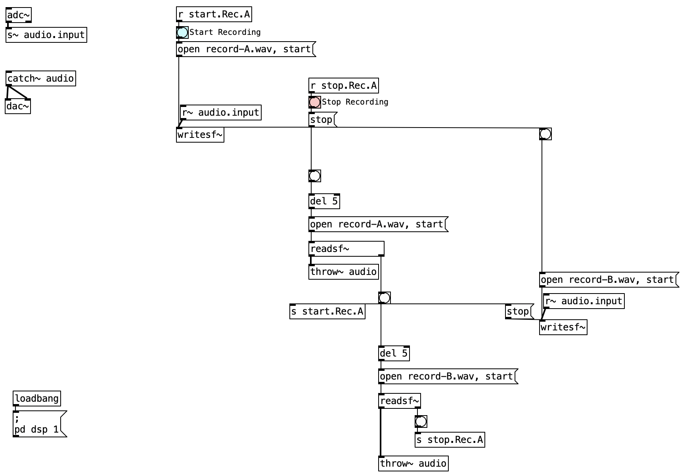

flowchart TD
A[Microphone adc~] --> B[s~ audio.input]
B --> C[Record A writesf~ record-A.wav]
C --> D[Playback readsf~ record-A.wav]
D --> E[throw~ audio]
E --> F[catch~ audio]
F --> G[Speakers dac~]
D --> H[Record B writesf~ record-B.wav]
H -.-> D
2 Rec & Play
In this chapter, we will explore the relationship between recording and playback. We will look at how these two processes can be used to create new sounds and compositions. We will also discuss the technical aspects of recording and playback, including the equipment and techniques used in the process. We will also consider the artistic implications of recording and playback, including how these processes can be used to create new forms of expression and communication.
2.1 I’m Sitting in a Room – Alvin Lucier

I’m Sitting in a Room (Alvin Lucier) consists of a 15-minute and 23-second sound recording. The piece opens with Lucier’s voice as he declares he is sitting in a room different from ours. His voice trembles slightly as he delivers the text, describing what will unfold over the next 15 minutes:
“…I am recording the sound of my speaking voice and I am going to play it back into the room again and again…”
As listeners, we know what is going to happen, but we don’t know how it will happen. We listen, following Lucier’s recorded voice. Then, Lucier plays the recording into the room and re-records it. This time, we begin to hear more of the room’s acoustic characteristics. He continues to play back and re-record his voice—over and over—until his speech becomes softened, almost dissolved, into the sonic reflections of the room in which the piece was recorded and re-recorded.
One effective way to study a piece is to replicate its technical aspects and the devices involved. The aim of this activity is to recreate the technical setup of I’m Sitting in a Room, focusing on the processes of recording, playback, and automation.
There are many ways to implement this technical system. Just to mention two environments we’re currently working with: it’s relatively straightforward in Pure Data.
In terms of hardware, besides a computer, you’ll need a speaker (mono audio output), a microphone (mono audio input), and a semi-reverberant room.
The system should include at least two manual (non-automated) controls:
- Start recording
- Stop recording
Choose a room whose acoustic or musical qualities you’d like to evoke. Connect the microphone to the input of tape recorder #1. From the output of tape recorder #2, connect to an amplifier and speaker. Use the following text, or any other text of any length:
I am sitting in a room different from the one you are in now. I am recording the sound of my speaking voice, and I am going to play it back into the room again and again until the resonant frequencies of the room reinforce themselves so that any semblance of my speech, with perhaps the exception of rhythm, is destroyed. What you will hear, then, are the natural resonant frequencies of the room articulated by speech. I regard this activity not so much as a demonstration of a physical fact, but more as a way to smooth out any irregularities my speech might have.
The following steps outline the process:
- Record your voice through the microphone into tape recorder #1.
- Rewind the tape, transfer it to tape recorder #2, and play it back into the room through the speaker. - Record a second generation of the statement via the microphone back into tape recorder #1.
- Rewind this second generation to the beginning and splice it to the end of the original statement in tape recorder #2.
- Playback only the second generation into the room and record a third generation into tape recorder #1.
- Continue this process through multiple generations.
All the recorded generations, presented in chronological order, create a tape composition whose duration is determined by the length of the original statement and the number of generations produced. Make versions in which a single statement is recycled through different rooms. Create versions using one or more speakers in different languages and spaces. Try versions where, for each generation, the microphone is moved to different parts of the room(s). You may also develop versions that can be performed in real time.

2.1.1 Pure Data implementation of I’m sitting in a room

In this section, we will break down the Pure Data patch I-am-sitting-in-a-room.pd step by step. This patch is inspired by Alvin Lucier’s iconic piece and demonstrates how to recursively record and play back sound to reveal the resonant frequencies of a room.
2.1.1.1 Conceptual Overview
The patch enables you to:
- Record your voice or any sound in a room.
- Play back the recording into the room and re-record it.
- Repeat this process, so the room’s resonances become more pronounced with each generation.
2.1.2 System Diagram
The following diagram illustrates the recursive nature of the recording and playback process, similar to how Lucier’s piece unfolds. Each generation of tape recorders captures the previous one, creating a feedback loop that emphasizes the room’s resonances.
flowchart TD
%% Define styles without dashes in fill values
classDef recorder1 fill:#d4f1c5,stroke:#333
classDef recorder2 fill:#c5e0f1,stroke:#333
classDef microphone fill:#f1e3c5,stroke:#333
classDef roomStyle fill:#f5f5f5,stroke:#333,stroke-dasharray:5 5
%% Generation 1
mic1["Microphone"]:::microphone --> tr1a["Tape Recorder 1 Records Gen 1"]:::recorder1
tr1a --> tr2a["Tape Recorder 2 Has Gen 1 Tape"]:::recorder2
%% Generation 2 - Simultaneous processes
tr2a --> room1["Room"]:::roomStyle
room1 --> mic2["Microphone"]:::microphone
mic2 --> tr1b["Tape Recorder 1 Records Gen 2"]:::recorder1
%% Transfer for Gen 2
tr1b --> tr2b["Tape Recorder 2 Has Gen 2 Tape"]:::recorder2
%% Generation 3 - Simultaneous processes
tr2b --> room2["Room"]:::roomStyle
room2 --> mic3["Microphone"]:::microphone
mic3 --> tr1c["Tape Recorder 1 Records Gen 3"]:::recorder1
%% Transfer for Gen 3
tr1c --> tr2c["Tape Recorder 2 Has Gen 3 Tape"]:::recorder2
%% Show flow between generations
tr2a -.- |"Play and record simultaneously"| mic2
tr2b -.- |"Play and record simultaneously"| mic3
%% Continue process
tr2c -.- next["Continue process"]
%% Apply styles
class mic1,mic2,mic3 microphone
class tr1a,tr1b,tr1c recorder1
class tr2a,tr2b,tr2c recorder2
class room1,room2 roomStyle
2.1.3 Step 1: Audio Input and Routing
adc~receives audio from your microphone.- The signal is sent to
s~ audio.input, making it available to other parts of the patch. - This modular routing allows the same input to be used for both recording and playback chains.
2.1.4 Step 2: Recording Your Voice (record-A.wav)
- Press the Start Recording button (
bnglabeled “Start Recording”). - This triggers a message:
open record-A.wav, start→writesf~ - The incoming audio from your microphone is now being recorded to
record-A.wav. - Press the Stop Recording button (
bnglabeled “Stop Recording”) to send thestopmessage, ending the recording.
2.1.5 Step 3: Playback and Re-recording (record-B.wav)
- To play back your recording, another button triggers:
open record-A.wav, start→readsf~ - The playback signal is routed to:
throw~ audio(so you hear it through the speakers)writesf~(recording torecord-B.wav)
- This means the playback of your first recording is re-recorded, capturing both the original sound and the room’s response.
2.1.6 Step 4: Recursive Process
- You can repeat the process:
- Play back
record-B.wavand record it again, each time reinforcing the room’s resonances.
- Play back
- Each iteration makes the speech less intelligible and the room’s resonant frequencies more prominent, just like in Lucier’s piece.
2.1.7 Step 5: Output
- All audio routed to
throw~ audiois collected bycatch~ audioand sent todac~for playback through your speakers or headphones.
2.1.8 Key Objects Table
| Object | Purpose |
|---|---|
adc~ |
Audio input from microphone |
writesf~ |
Record audio to a file |
readsf~ |
Play audio from a file |
throw~/catch~ |
Mix and route audio signals |
dac~ |
Audio output to speakers |
bng |
Button for triggering actions |
msg |
Send commands to objects (open, start, stop) |
2.1.9 How to Use the Patch
- Start Recording:
Click the “Start Recording” button and speak or make a sound. - Stop Recording:
Click the “Stop Recording” button to finish. - Playback and Re-record:
Use the playback button to play your recording into the room and simultaneously re-record it. - Repeat:
Repeat the playback and re-recording process as many times as you like to hear the room’s resonances emerge.
This patch is a practical and creative way to explore acoustic phenomena and the transformation of sound through recursive recording, echoing the spirit of Lucier’s original work.